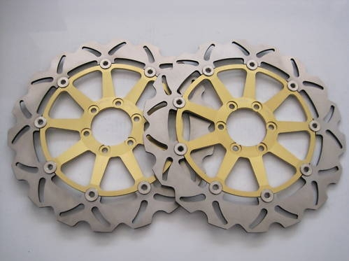
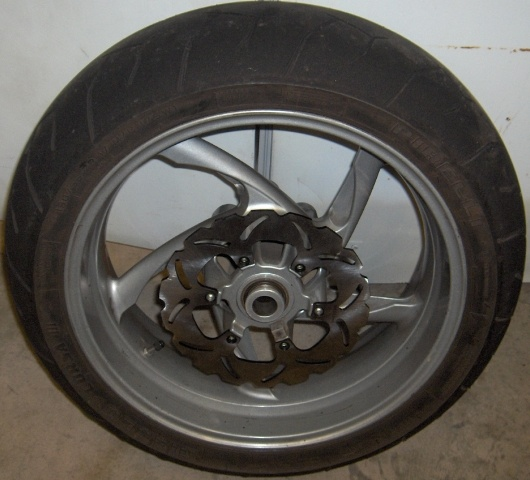

Front Rotor
double floating, diameter 320 mm, 36mm brake surface, with 4-piston caliper, 64 mm inner diameter, 6off M8 holes, 10 mm offset
Brembo #08200370 (Brembo MQ# 08DU9032)
Benelli $AU1250 /pair
Alternative: same part# as used by APRILIA: RS125, Tuono, Falco,Futura, RSV/R 98>2005....99% of Ducatis
...Triumph Daytona650, Daytona 955i 2002>, Sprint St 1050 05>,Rocket2300cc.
Aftermarket:
Braking Wave: Road Left & Right SX/DX p/n: STX73D
Braking Wave Australian Importers: C&R Imports Ph 03 9587 5077
ACT Distr: Canberra Motorcycle Centre (Ulysses discount applies)
Brake Disc Factory (Wuxi, China) Distributed on ebay by "racingboy1982": Road Left & Right p/n: ZC929
These have been successfully used by Madwog on his TNT Sport. There's a set in my garage ready to go when needed.
The price at Apr 2011 was US $160 + US $50 shipping, and they were available with gold or black carriers. If the colour is not specified
at the time of purchase, it will be randomly selected for you!
Rear Rotor
single fixed, diameter 240, 36mm brake surface, with twin piston caliper, Marchesini wheel pattern, 110 mm inner diameter, 6off M6 holes, 0 mm offset
Benelli $AU200
Brake Disc Factory (Wuxi, China) Distributed on ebay by "racingboy1982": p/n: ZC883
These are the same as used by the BMW F650.
A little care is needed to ensure there is clearance between the finished bolt head and the speedo sensor.
The counter-bore on the OEM is 2.0 mm, while the BDF one is between 1.65 & 1.70 mm, so the head will be higher.
The price at Apr 2011 was US $60 + US $35 shipping
|  |  |
Brake Disc Factory Front Rotors |
Brake Disc Factory Rear Rotor |
Lawrence arranged a forum group buy of the Brake Disc Factory rotors in the March 2011
100 GBP per front pair
50 GBP for the rear
15 GBP for shipping direct to me in Australia